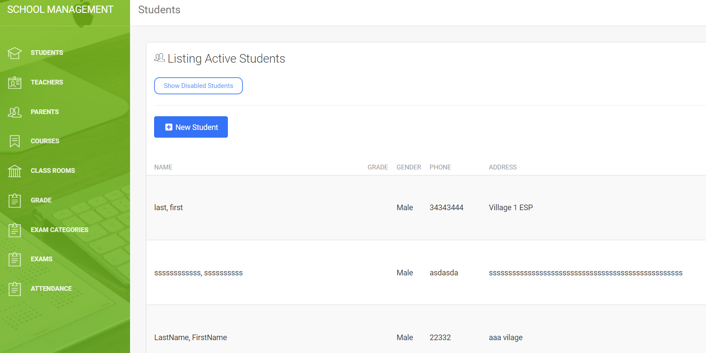

Software engineer with 10+ years of hands-on experience building and maintaining Ruby on Rails applications — from e-commerce platforms and SaaS tools to healthcare data systems. In recent years I've expanded into AI integration, working with OpenAI and Anthropic's Claude API to bring intelligent features into production apps. I enjoy working across the full stack, thrive in remote team environments, and care a lot about writing code that's clean, well-tested, and easy to hand off.
Participated in sprint planning, daily standups, and technical spike sessions to keep the team aligned and unblocked. Built and maintained data pipelines for tracking hospital and patient metrics, improving the accuracy and accessibility of clinical records. Developed Excel and CSV data extraction features, replacing tedious manual workflows and making it easier for clinical staff to import and manage data. Investigated and resolved production issues surfaced by client bug reports, quickly pinpointing root causes and shipping fixes without disrupting other workflows.
Stack: Ruby on Rails, PostgreSQL
Wrote integration tests for ordering and cart management services, filling coverage gaps and giving the team more confidence in deployments. Investigated and resolved production issues surfaced by client bug reports, quickly pinpointing root causes and shipping fixes without disrupting other workflows.
Stack: Ruby on Rails, RSpec
Contributed to an AI-powered homework writing assistant, integrating PPLX language models into a Rails backend to generate content based on student prompts. Worked on the full flow from user input to AI response rendering, ensuring a smooth experience for end users.
Stack: Ruby on Rails, PPLX, Tailwind CSS, Heroku, jQuery
Kept a high-traffic greeting card platform stable and performant over four years, shipping regular feature improvements including a redesigned sign page and new custom cover options. Resolved long-standing bugs affecting user experience and supported teammates by reviewing their work and helping clear blockers.
Stack: Ruby on Rails, Bootstrap 4, jQuery
Owned end-to-end development across carrier, shipper, and rate management modules — handling everything from new features to AWS EC2 deployments and server upkeep. Built a CSV bulk-upload pipeline that automated data ingestion, replacing a slow manual process and saving the ops team significant time each week. Cleaned up a codebase inherited from a previous developer — squashed legacy bugs and enforced code quality standards with ESLint.
Stack: Ruby on Rails, AWS EC2
Wrote Cucumber/JRuby test scenarios to catch regressions before they reached users, working closely with developers to ensure new features didn't inadvertently break existing ones.
Stack: JRuby, Cucumber
Built a real-time system monitoring dashboard tracking CPU, memory, bandwidth, and disk usage across multiple machines, with automated alerts for administrators when issues were detected. Developed a full clinic management platform covering patient queueing, electronic prescriptions, medical inventory, and billing. Worked on a Bluetooth-enabled IoT information system with both web and mobile interfaces.
Stack: Ruby on Rails, Cassandra, HTML, Bootstrap, jQuery, Highcharts; Java Servlet, Struts 2, Hibernate, MySQL
Integrated OpenAI (GPT & DALL-E) and Claude API into a content platform, enabling automated article writing, AI image generation, and writing profile management. Built an audio/video transcription pipeline that converts recordings into structured prompts used by the AI to generate polished articles. Developed reusable components that cut development time across multiple features, and introduced debugging practices that meaningfully reduced defect rates.
Stack: Ruby on Rails, OpenAI (GPT-4 & DALL-E), Claude API, Cursor, Hatchbox, Asana
Graduated with distinction, recognized as Most Outstanding IT Student by PSITE NCR (April 2014). Received the Best IT Project award for the E-RxApp Electronic Prescription Web Application — a full clinic management system featuring patient queueing, doctor diagnosis, prescription history, and medicine summary printing. Built with HTML, Bootstrap, jQuery, Java Servlet, and MySQL.

A comprehensive system covering enrollment, examination testing, teacher and student records, subject management, and a grading system for efficient academic administration.
View ProjectEnterprise resource planning system with an ordering system, accounting module, and inventory management.
View ProjectA billing system for newspaper clients handling order placement, payment processing, transaction history, and PDF statement generation.
View ProjectMobile-first delivery application built with Ionic, AngularJS, and a Ruby on Rails REST API backend, integrated with Firebase for real-time data and deployed on Ubuntu Server.
View ProjectFull-stack CMS built with Ruby on Rails and MySQL on the backend and HTML, CSS, jQuery, and Bootstrap on the frontend, hosted on Ubuntu Server.
View ProjectFull-stack CMS built with Ruby on Rails and MySQL on the backend and HTML, CSS, jQuery, and Bootstrap on the frontend, hosted on Ubuntu Server.
View Project